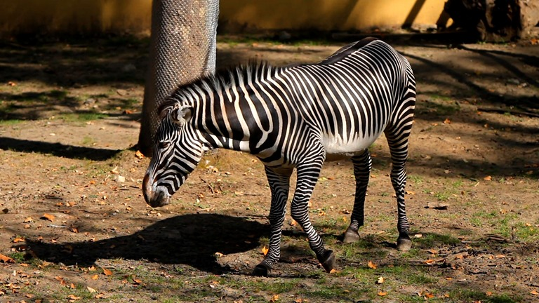
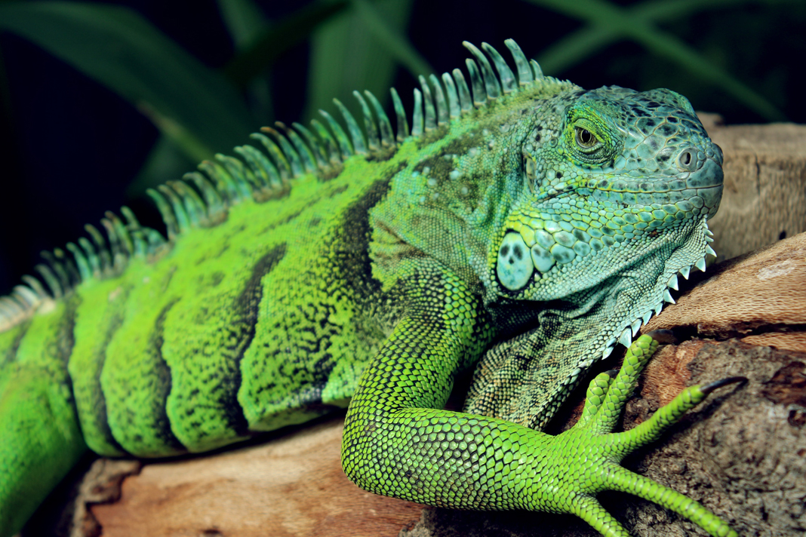
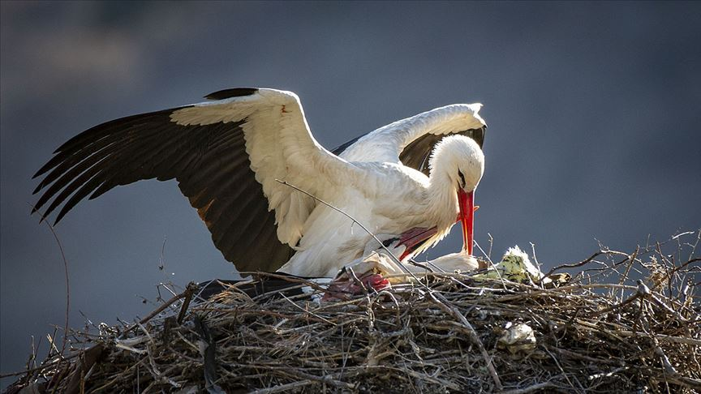

Hayvanlar aleminde görülen çeşitlilik, dünya üzerindeki yaşamın
zenginliğini ve karmaşıklığını yansıtan büyük bir mirası temsil eder. Bu
çeşitlilik, farklı iklimler, coğrafyalar ve ekosistemlerde evrimleşmiş
milyonlarca türü içerir. Denizlerden dağlara, çöllerden yağmur
ormanlarına kadar her ortamda, hayvanlar çeşitli adaptasyonlar
geliştirmişlerdir. Memelilerden sürüngenlere, kuşlardan balıklara kadar
geniş bir yelpazede bulunan hayvan türleri, kendilerine özgü özellikleri
ve davranışlarıyla dikkat çeker. Bu çeşitlilik, ekosistemlerin denge
içinde çalışmasına katkı sağlar ve birbirleriyle olan etkileşimleri
dünya üzerindeki yaşamı sürdürmek adına önemli kılar. Aynı zamanda,
hayvanlar alemindeki çeşitlilik, bilim insanları için sürekli bir keşif
alanı oluşturarak doğal dünyanın karmaşıklığını anlamada yardımcı olur.
Memeliler

Zebra
Memeliler, omurgalı hayvanlar arasında öne çıkan bir grup olup
genellikle sıcak kanlıdırlar. Bu grup, çeşitli boyutlarda ve yaşam
alanlarında bulunan birçok türü içerir. Memeliler genellikle kürk veya
tüylerle kaplıdır ve genellikle gençlerini emzirme yetenekleri ile
bilinirler. Örnek memeli türleri arasında kedigiller, köpekgiller,
filler ve primatlar gibi çeşitli hayvanlar bulunur.
Sürüngenler

Iguana
Sürüngenler, soğuk kanlı ve pullarla kaplı bir deriye sahip omurgalı
hayvanlardır. Bu grup, yılanlar, timsahlar, kaplumbağalar ve
kertenkeleler gibi farklı türleri içerir. Sürüngenler genellikle çeşitli
iklimlerde yaşarlar ve vücut sıcaklıklarını çevresel faktörlere bağlı
olarak düzenlerler. Sürüngenler genellikle avlarını yakalayarak veya
zehir kullanarak avlarını öldürerek beslenirler.
Kuşlar

Leylek
Kuşlar, tüyleri, kanatları ve gagalarıyla bilinen sıcak kanlı omurgalı
hayvanlardır. Bu grup, uçabilen ve uçamayan türleri içerir. Kuşlar
genellikle yuva yapma ve yumurta bırakma gibi özellikleriyle bilinirler.
Renkli tüyleri, şarkıları ve çeşitli şekillerdeki gagalarıyla kuşlar,
görsel ve işitsel iletişimde önemli bir rol oynar. Örnek kuş türleri
arasında kartallar, serçeler, papağanlar ve penguenler bulunmaktadır.